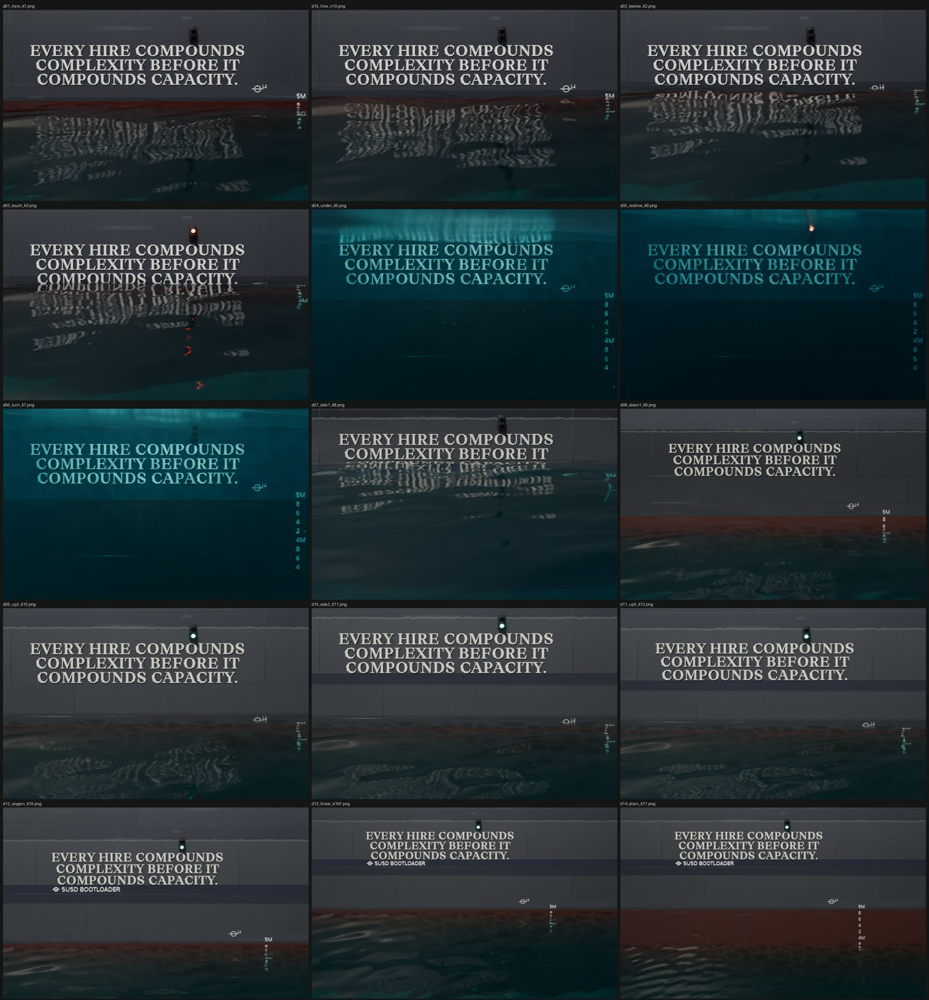

Scroll
The Blender renders in scroll order: hiring, the water reaching the sentence at 13, under water, Redline, the turn, then Up, Side and Down draining it, and the Bootloader.

Videos of the same thing (these play on a computer): desktop, phone, renders only.